Kerala Traffic Signs — Complete Guide for the Learners Licence Test
Traffic signs are the single biggest part of the Kerala learners licence (LLR) test — and the most common reason people fail is mixing up signs that look alike. This guide explains every category of Indian road sign used in Kerala, with real pictures and plain-English meanings, so you can recognise them instantly on test day.
Indian road signs, standardised across Kerala by the Motor Vehicles Department, fall into three groups. Learn the shape and colour rule for each group first — it lets you guess a sign's purpose even if you have never seen that exact symbol before.
1. Mandatory (regulatory) signs
Shape & colour: mostly circular. A red border on white means something is prohibited; a solid blue circle gives a positive command you must follow. Two special shapes: Stop is a red octagon and Give Way is a downward-pointing red triangle.
Mandatory signs carry the force of law — disobeying them is a punishable offence. They control speed, direction, entry, parking and horn use.
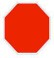
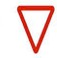
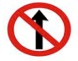
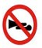
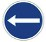
Common mandatory signs to memorise: Stop, Give Way, No Entry, One Way, No Parking, No Stopping, Horn Prohibited, Speed Limit, No Overtaking, Compulsory Keep Left, Pedestrians Prohibited and the various height, width and weight limit signs.
2. Cautionary (warning) signs
Shape & colour: an upward triangle with a red border on a white background, showing a black symbol of the hazard. They warn you of something ahead so you slow down and stay alert — they don't prohibit anything.
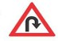
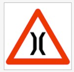
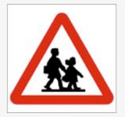
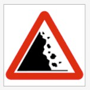
Common cautionary signs: right/left curve, hairpin bends, steep ascent/descent, narrow road and narrow bridge, slippery road, pedestrian crossing, school ahead, cattle, falling rocks, road junctions and railway crossings (with or without a gate).
3. Informatory signs
Shape & colour: usually rectangular, in blue or green. They inform and guide — pointing you to facilities, directions and public services. Nothing to obey; just useful information.
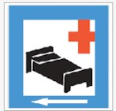
Common informatory signs: Hospital, First Aid Post, Petrol Pump, Public Telephone, Parking, Eating Place / Light Refreshment, Resting Place and direction/place-name boards.
Browse every sign (with its own page)
Tap any sign for its full meaning, where you'll see it, what to do, common test mistakes and related signs.
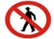
Pedestrians Prohibited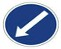
Compulsory Keep Left Compulsory Left Turn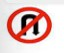
U-Turn Prohibited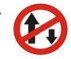
One-Way Traffic School Ahead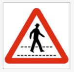
Pedestrian Crossing Narrow Bridge Ahead Right Hairpin Bend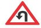
Left Hairpin Bend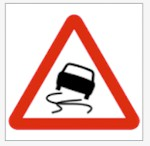
Slippery Road Falling Rocks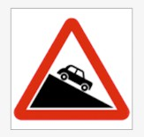
Steep Descent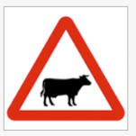
Cattle on Road Hospital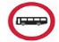
Bus Stop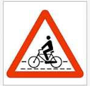
Cycle TrackHow to remember traffic signs for the test
- Learn the shape rule first. Triangle = warning, circle = order, rectangle = information. This alone lets you eliminate wrong answers.
- Red means stop or prohibit; blue means a command; green/blue rectangles mean guidance.
- Practise the look-alikes together — e.g. "No Entry" vs "One Way", or the different hairpin-bend and curve signs — because that's exactly where the exam tries to trip you up.
- Test yourself with real pictures, not just names. Recognising the image quickly is what the computer test actually checks.
Practise all 77 traffic-sign questions free
Recognising signs from pictures is the fastest way to pass. Try the real question bank with instant feedback.
Start Traffic Signs practice →Frequently asked questions
How many types of traffic signs are in the Kerala RTO test?
Three: mandatory (regulatory) signs you must obey, cautionary (warning) signs that warn of a hazard ahead, and informatory signs that guide you to facilities and directions.
What shape are mandatory signs?
Mostly circular. A red border on white means prohibited; a solid blue circle is a positive command. Stop is a red octagon and Give Way is a downward red triangle.
What shape are cautionary signs?
An upward triangle with a red border on white, showing a black symbol of the hazard ahead — such as a curve, a school, cattle, or falling rocks.
What is the pass mark for the Kerala learners test?
On RTO Cracker's mock test you answer 30 questions (30 seconds each) and need 18 correct to pass, matching the official computer-test pattern.